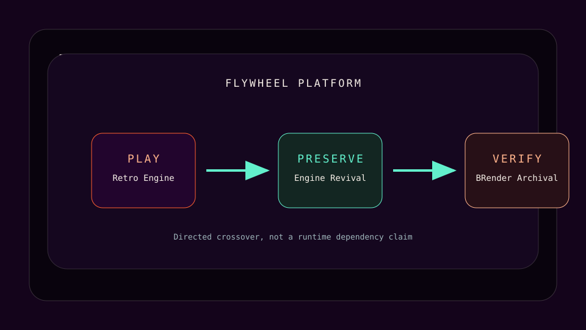
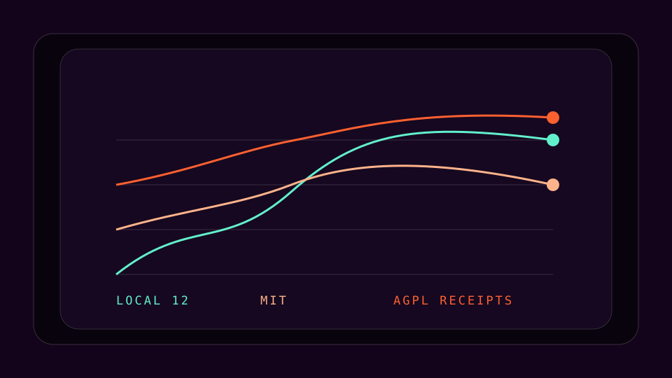

Retro Engine
Interactive browser studio for owned pixel, shader, palette, and CRT experiments.
Flywheel first · Retro Systems Lab · preserve
Flywheel is the single primary platform. Engine Revival sits below it as the preserve layer in a three-part Retro Systems Lab: Retro Engine to play, Engine Revival to preserve, and BRender Archival to verify a specific restoration.
Engine Revival v0.1.0 is public at release v0.1.0, with main pinned to 0af6d527860a63c418b5775dc0efe9ba89557604. The MIT repo boundary is distinct from imported AGPL-covered BRender media and receipts.

Interactive browser studio for owned pixel, shader, palette, and CRT experiments.
Public MIT preservation spine. It records local 12-target materializer scope and imported release evidence without merging their claims.
A distinct BRender restoration route. generic Retro Engine output is not BRender evidence.

Engine Revival public main and release v0.1.0 both resolve to 0af6d527860a63c418b5775dc0efe9ba89557604. The repository is MIT. Its page records BRender Archival as an imported external 21-target release, not as output from the local 12-target materializer.
Does not prove: product parity, adoption, performance, legal completeness, or that local 12-target scaffold output equals the external 21-target BRender release.
Retro Engine is a companion renderer, not BRender proof. generic Retro Engine output is not BRender evidence. Engine Revival preserves the evidence spine and imported AGPL-covered BRender media and receipts while keeping the MIT repo boundary clear.
The cluster routes back to the platform, creative engines, and evidence tools without changing their ownership boundaries.
Responsive contract: this page is static without JavaScript, keeps readable flow at 320px and 390px widths, and must remain usable at 400% zoom with print, forced-colors, text-spacing, focus, and reduced-motion modes.